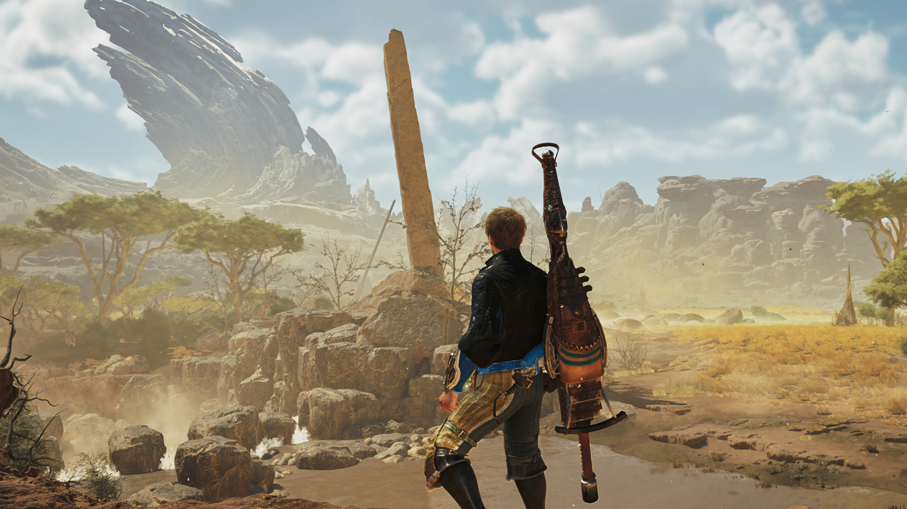

Cyberpunk 2077 – Lumières de Night City
Plongez dans l’atmosphère futuriste de Night City, entre néons agressifs et ruelles sombres. Ces captures reflètent l’ambiance cyberpunk.

Télécharger 1 Télécharger 2 Télécharger 3
Voici ma galerie d’œuvres visuelles réalisées à partir de mes captures dans des jeux vidéo.
Plongez dans l’atmosphère futuriste de Night City, entre néons agressifs et ruelles sombres. Ces captures reflètent l’ambiance cyberpunk.
Une scène majestueuse, capturée dans l'obscurité des pyramides. L’atmosphère poussiéreuse et la lumière filtrée rendent hommage à l’Égypte ancienne.
Un monde sauvage et indompté. Cette capture saisit l’instant où le chasseur observe son environnement avant l’affrontement.
Geralt, stoïque et silencieux, contemple un paysage brumeux. Une scène marquée par la solitude et le mysticisme qui entoure le monde du Sorceleur.